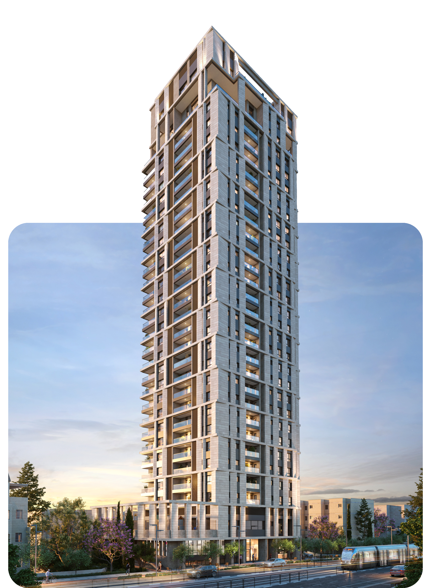

כל אפשרות מוצגת בגובה מלא עם התוכן האמיתי של עמוד הבית. ההדמיות שלנו צרות וגבוהות — כל אפשרות פותרת את זה בדרך אחרת. גללו ובחרו.
חיתוך רוחבי מתוך הדמיית הערב (יש בה מספיק רזולוציה לרוחב מלא). המגדל במרכז, שכבת נייבי כהה שומרת על קריאות הטקסט. הקלאסי של אתרי נדל"ן.
אנחנו יודעים שמעבר מהבית הוא תהליך משמעותי. לכן ריכזנו עבורכם במקום אחד את כל המידע, השלבים והכלים.
המגדל מוצג בשלמותו — בלי חיתוך — בעמודה בצד, והטקסט יושב על נייבי נקי. מראה מגזיני קלאסי; במובייל התמונה עוברת למעלה.
אנחנו יודעים שמעבר מהבית הוא תהליך משמעותי. לכן ריכזנו עבורכם במקום אחד את כל המידע, השלבים והכלים.
ההדמיה עצמה, מטושטשת ומוכהה, ממלאת את כל הרוחב — והמגדל החד נראה בשלמותו בצד, כאילו יוצא מתוך הרקע. פתרון מודרני נפוץ לתמונות צרות.

אנחנו יודעים שמעבר מהבית הוא תהליך משמעותי. לכן ריכזנו עבורכם במקום אחד את כל המידע, השלבים והכלים.
השמרני מכולם: ההדמיה נטמעת בנייבי כטקסטורה עדינה מאחורי הטקסט — רואים את המגדל, אבל הוא לא מתחרה בכותרת. הכי קרוב למראה הנוכחי.
אנחנו יודעים שמעבר מהבית הוא תהליך משמעותי. לכן ריכזנו עבורכם במקום אחד את כל המידע, השלבים והכלים.
הדמיית ה־cutout (ללא רקע) ניצבת על שמיים מצוירים בצבעי המותג, עם זוהר כתום עדין באופק. נקי ומודרני, בלי בעיית חיתוך בכלל; במובייל המגדל הופך לרקע שקוף מאחורי הטקסט.
אנחנו יודעים שמעבר מהבית הוא תהליך משמעותי. לכן ריכזנו עבורכם במקום אחד את כל המידע, השלבים והכלים.
בחרו מספר (1-5) והאפשרות תיושם בעמוד הבית האמיתי.